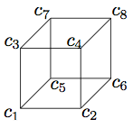

Random Walk on a Cube
Question-2 in HW 4 asks to compute the number of expected steps that a particle takes to go from $c_1$ to $c_8$ on the cube shown below.

We found this number to be 10. Let us explore numerically what this means. For this purpose, I wrote a MAtlab function RandWalkCube that generates a valid random walk, as described in the question. When called, the function returns a list of the the labels for the corners visited.
L = RandWalkCube
L =
5 1 3 7 5 7 8
Observe that the number of steps is equal to the length of the list L. For this particular instance, the number of steps is :
length(L)
ans =
7
The expected number of steps being equal to 10 suggests that, if we were to repeat the experiment many times and keep record of the number of steps in each trial, we would get 10 steps on average. Let us test this. Note that this can be checked easily with a loop.
N = 10000; AvgSteps = 0; for n = 1:N, L = RandWalkCube; AvgSteps = AvgSteps + (1/N) * length(L); end AvgSteps
AvgSteps = 10.0426
Notice that AvgSteps is not exactly 10 but quite close. In fact, if the expected value of a random variable is related to a special number like $\pi$ or $e$, we could use such a simulation to approximate that special number.
Here's the code for the function RandWalkCube, for your interest :
function [ L ] = RandWalkCube % generates a random walk on the cube
% connection matrix Connections = [3 5 2 ; 1 4 6 ; 1 7 4 ; 3 2 8 ; 1 7 6 ; 5 2 8 ; 3 5 8 ]; % the k'th row of the connection matrix shows the corners that can be % visited from the k'th corner
Cur = 1; % the current corner L = []; % the list of corners while (Cur ~= 8), % continue until the particle reaches c8 n = ceil(3*rand(1,1)); % n is one of {1,2,3}, chosen randomly Cur = Connections(Cur,n); % choose one of the possible corners L = [ L Cur]; % add to the list end
Ilker Bayram, Istanbul Teknik Universitesi, 2015